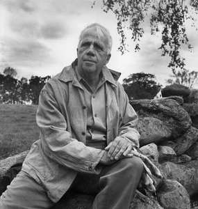

Robert Frost was born on March 26, 1874, in San Francisco, where his father, William Prescott Frost Jr., and his mother, Isabelle Moodie, had moved from Pennsylvania shortly after marrying. After the death of his father from tuberculosis when Frost was eleven years old, he moved with his mother and sister, Jeanie, who was two years younger, to Lawrence, Massachusetts. He became interested in reading and writing poetry during his high school years in Lawrence, enrolled at Dartmouth College in Hanover, New Hampshire, in 1892, and later at Harvard University in Boston, though he never earned a formal college degree.
 Back to Index